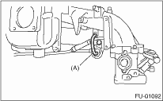
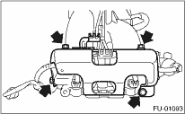
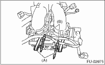
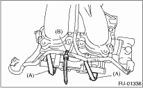
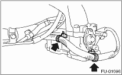
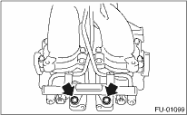
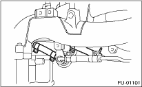
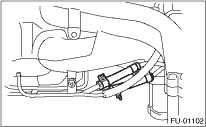
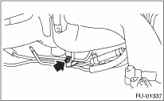

1. Disconnect the engine ground terminal from intake manifold.

2. Remove the ignition coil and ignitor assembly. 
3. Remove the throttle body.
4. Remove the EGR valve.
5. Remove the PCV pipe.
6. Disconnect the pressure regulator vacuum hose (A) from the intake manifold.

7. Remove the fuel pipe protector LH.

8. Remove the fuel pipe protector RH.

9. Disconnect the connectors (A) from fuel injector.
10. Remove the harness band (B) which holds the engine harness to injector pipe.
• RH side

• LH side

11. Remove the tumble generator valve actuator.
12. Remove the purge control solenoid valve.
13. Remove the harness band clips which attach the engine harness to the tumble generator.

14. Remove the bolts which hold engine harness to intake manifold.

15. Remove the engine harness from intake manifold.
16. Remove the bolts which install injector pipe on the intake manifold as shown in the figure
• RH side

• LH side


17. Remove the fuel injectors from injector pipe.
18. Loosen the clamp which holds the fuel injector pipe to the RH fuel hose, and then disconnect the pipe from the fuel hose.

19. Loosen the clamp which holds the fuel injector pipe to the LH fuel hose, then disconnect the pipe from the fuel hose.

20. Remove the fuel injector pipe.
21. Remove the bolts which install the pressure regulator to the intake manifold.
22. Remove the bolts which install fuel pipes on intake manifold.

23. Remove the fuel pipe assembly and pressure regulator from intake manifold.
24. Remove the intake manifold.